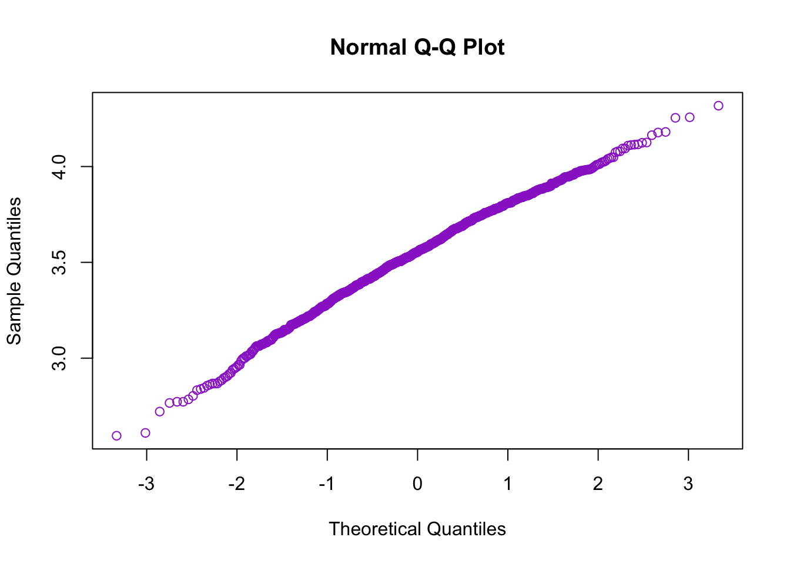
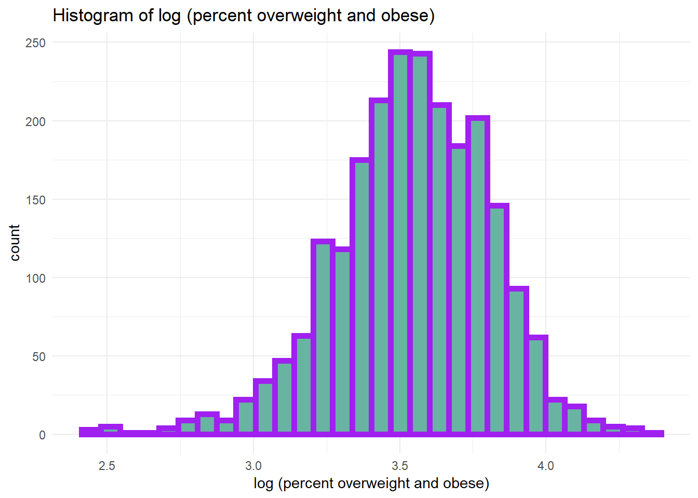
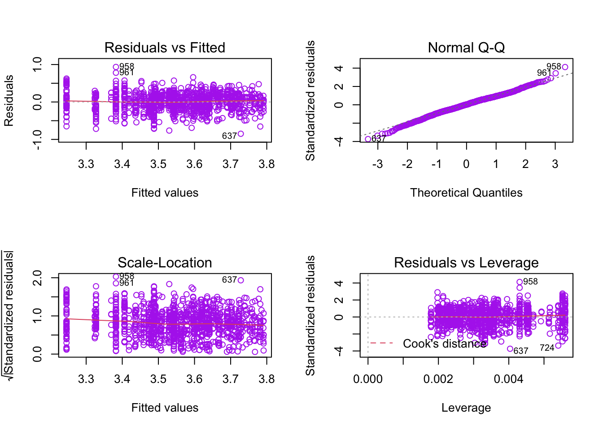

## `summarise()` ungrouping output (override with `.groups` argument)Before fitting the linear regression model, I used two types of transformation to improve model adequacy, a. y’ = log(y), b. y’= y^0.5, Q_Q plot showed that the log tansformation has improved data’s normality.

## `stat_bin()` using `bins = 30`. Pick better value with `binwidth`.
Above are the Q-Q plot and histogram of overweight/obesity data after log transformation. Q-Q plot is in a perfect straight line, histogram is normally distributed but a bit skewed to the left. Overall, the normality assumption is satisfied.
Based on the transformation above, the model we are going to fit is: \[ log(percentage \space overweight \space or \space obese) = \beta_0 + \beta_1grade \space level + \beta_2median \space income + \beta_3 food \space insecurity \space rate + \beta_4 gender\]
In the beginning we included 4 independent variables, grade level, median income, food insecurity, gender, however the model summary showed there is a weak correlation between gender (p-value = 0.168) with dependent variable y, so we took gender out from the model, left three variables all significantly influenced the percentage overweight and obese.
\[ log(y) = 4.541 + 0.161x_1 - 0.010x_2 - 0.039x_3\] y = percentage overweight or obese
x1= grade level (0 = elementary, 1 = middle/high school)
x2 = median income (k dollars)
x3 = food insecurity percentage
summary(lm_1)##
## Call:
## lm(formula = log(percent_overweight_or_obese) ~ grade_level +
## median_income + food_insecurity_p, data = linear_df3)
##
## Residuals:
## Min 1Q Median 3Q Max
## -0.84887 -0.13917 0.00674 0.15418 0.93503
##
## Coefficients:
## Estimate Std. Error t value Pr(>|t|)
## (Intercept) 4.5411958 0.1269828 35.762 < 2e-16 ***
## grade_level 0.1605545 0.0133570 12.020 < 2e-16 ***
## median_income -0.0100907 0.0009203 -10.965 < 2e-16 ***
## food_insecurity_p -0.0385197 0.0064664 -5.957 3.4e-09 ***
## ---
## Signif. codes: 0 '***' 0.001 '**' 0.01 '*' 0.05 '.' 0.1 ' ' 1
##
## Residual standard error: 0.2275 on 1160 degrees of freedom
## Multiple R-squared: 0.2526, Adjusted R-squared: 0.2507
## F-statistic: 130.7 on 3 and 1160 DF, p-value: < 2.2e-16
There is no strange pattern about Residusl vs Fitted plot, and Normal Q-Q plot is on a straight line, so the constant variance assumption is met, and this model is valid. Three variables are significant with very small p-value (<0.001). However, due to the limitation of data, the model’s R-squared is equal to 0.2526, which means only 25% of the data is explained by this model. A possible explanation is that other important factors have not been included. We will make improvement when more data is available.